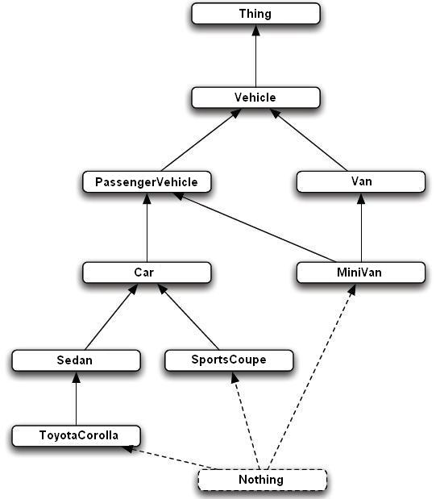

| > Home |
| > Documentation |
| > Downloads |
| > Online Demo |
| > Contact |
How to use the Taxonomy Querying API of OO jDREW
Creating a Taxonomy
There are two different methods to define a Taxonomy (RDFS/XML subClassOf). One way is to use RDFS/XML to define the taxonomy. The other way to define a taxonomy is to use the RuleML/POSL syntax of subsumes(superClass, subClass). This also comes with a RuleML/XML syntax.All of the examples shown will be based on the following taxonomy diagram. The artificial class Thing at the top of the directed labeled graph is used to show that every class has a superClass of type "Thing". As well as the artificial Nothing is used to show that every class is a subClass of "Nothing".

RDFS/XML Syntax
The above taxonomy can be defined in RDFS/XML by the following schema:<rdf:RDF
xmlns:rdf="http://www.w3.org/1999/02/22-rdf-syntax-ns#" xmlns:rdfs="http://www.w3.org/2000/01/rdf-schema#" xml:base="http://example.org/schemas/vehicles"> <rdf:Description rdf:ID="Vehicle"> <rdf:type rdf:resource="http://www.w3.org/2000/01/rdf-schema#Class"/> </rdf:Description> <rdf:Description rdf:ID="PassengerVehicle"> <rdf:type rdf:resource="http://www.w3.org/2000/01/rdf-schema#Class"/> <rdfs:subClassOf rdf:resource="#Vehicle"/> </rdf:Description> <rdf:Description rdf:ID="Van"> <rdf:type rdf:resource="http://www.w3.org/2000/01/rdf-schema#Class"/> <rdfs:subClassOf rdf:resource="#Vehicle"/> </rdf:Description> <rdf:Description rdf:ID="Car"> <rdf:type rdf:resource="http://www.w3.org/2000/01/rdf-schema#Class"/> <rdfs:subClassOf rdf:resource="#PassengerVehicle"/> </rdf:Description> <rdf:Description rdf:ID="MiniVan"> <rdf:type rdf:resource="http://www.w3.org/2000/01/rdf-schema#Class"/> <rdfs:subClassOf rdf:resource="#Van"/> <rdfs:subClassOf rdf:resource="#PassengerVehicle"/> </rdf:Description> <rdf:Description rdf:ID="Sedan"> <rdf:type rdf:resource="http://www.w3.org/2000/01/rdf-schema#Class"/> <rdfs:subClassOf rdf:resource="#Car"/> </rdf:Description> <rdf:Description rdf:ID="SportsCoupe"> <rdf:type rdf:resource="http://www.w3.org/2000/01/rdf-schema#Class"/> <rdfs:subClassOf rdf:resource="#Car"/> </rdf:Description> <rdf:Description rdf:ID="ToyotaCorolla"> <rdf:type rdf:resource="http://www.w3.org/2000/01/rdf-schema#Class"/> <rdfs:subClassOf rdf:resource="#Sedan"/> </rdf:Description> </rdf:RDF>
How to Create a TaxonomyQueryAPI object
To create an API object the first thing that is required is to create a File object that contains an RDFS/XML taxonomy (an example can be seen above). After the file, say types.rdfs, has been created, a TaxonomyQueryAPI object can be created.Code Example:
File f = new File("types.rdfs");
TaxonomyQueryAPI api = new TaxonomyQueryAPI(f);
How to Query the Taxonomy using the API
- To test if two classes are in a direct super/sub class relationship the following query is used:
In POSL Syntax:
subsumes(superClass,subClass)
In RuleML Syntax:
<Subsumes> <Rel>superClass</Rel> <Rel>subClass</Rel> </Subsumes>
- To test if two classes are in a indirect (transitive closure) super/sub class relationship the following query is used:
In POSL Syntax:
subsumesPlus(superClass,subClass)
In RuleML Syntax:
<SubsumesPlus> <Rel>superClass</Rel> <Rel>subClass</Rel> </SubsumesPlus>
- To find all of the direct subClasses of a class the following query is used:
In POSL Syntax:
subsumes(superClass, ?subClass)
In RuleML Syntax:
<Subsumes> <Rel>superClass</Rel> <Var>subClass</Var> </Subsumes>
- To find all of subClasses of a class in the transitive closure the following query is used:
In POSL Syntax:
subsumesPlus(superClass, ?subClass)
In RuleML Syntax:
<SubsumesPlus> <Rel>superClass</Rel> <Var>subClass</Var> </SubsumesPlus>
- To find all of the direct superClasses of a class the following query is used:
In POSL Syntax:
subsumes(?superClass, subClass)
In RuleML Syntax:
<Subsumes> <Var>superClass</Var> <Rel>subClass</Rel> </Subsumes>
- To find all of superClasses of a class in the transitive closure the following query is used:
In POSL Syntax:
subsumesPlus(?superClass, subClass)
In RuleML Syntax:
<SubsumesPlus> <Var>superClass</Var> <Rel>subClass</Rel> </SubsumesPlus>
- To find all direct super/sub class relationships for every class in the taxonomy the following query is used:
In POSL Syntax:
subsumes(?superClass, ?subClass)
In RuleML Syntax:
<Subsumes> <Var>superClass</Var> <Var>subClass</Var> </Subsumes>
- To find all indirect (transitive closure) super/sub class relationships for every class in the taxonomy the following query is used:
In POSL Syntax:
subsumesPlus(?superClass, ?subClass)
In RuleML Syntax:
<SubsumesPlus> <Var>superClass</Var> <Var>subClass</Var> </SubsumesPlus>
- To find the least upper bound of a set of classes the following query is used (relational syntax with result expected in first argument):
In POSL Syntax:
lub(?result,class1,class2,class3,...,classN)
In RuleML Snytax:
<LUB> <Var>result</Var> <Rel>class1</Rel> <Rel>class2</Rel> <Rel>class3</Rel> ................ <Rel>classN</Rel> </LUB>
- To find the greater lower bound of a set of classes the following query is used (relational syntax with result expected in first argument):
In POSL Syntax:
glb(?result,class1,class2,class3,...,classN)
In RuleML Snytax:
<GLB> <Var>result</Var> <Rel>class1</Rel> <Rel>class2</Rel> <Rel>class3</Rel> ................ <Rel>classN</Rel> </GLB>
Examples of Querying the Taxonomy with RuleML Answer Expressions
To express answers consisting of variable bindings (environments, substitutions), directed/oriented equalities are employed, where the serialization syntax-
POSL:
subsumes(Vehicle, Car)
RuleML:<Subsumes> <Rel>Vehicle</Rel> <Rel>Car</Rel> </Subsumes>
RuleML answer expression:
<RuleML> <Answer> <Ind>false</Ind> </Answer> </RuleML>
-
POSL:
subsumesPlus(Vehicle, Car)
RuleML:<SubsumesPlus> <Rel>Vehicle</Rel> <Rel>Car</Rel> </SubsumesPlus>
RuleML answer expression:
<RuleML> <Answer> <Ind>true</Ind> </Answer> </RuleML>
- POSL:
subsumes(Car, ?X)
RuleML:<Subsumes> <Rel>Car</Rel> <Var>X</Var> </Subsumes>
RuleML answer expression:<RuleML> <Answer> <Rulebase> <Equal> <Var>X</Var> <Ind>Sedan</Ind> </Equal> </Rulebase> <Rulebase> <Equal> <Var>X</Var> <Ind>SportsCoupe</Ind> </Equal> </Rulebase> </Answer> </RuleML>
- POSL:
subsumesPlus(Car, ?X)
RuleML:
Code Example:String queryPOSL = "subsumes(Car,?X)."; String solution = api.executeQueryPOSL(queryPOSL);
<SubsumesPlus> <Rel>Car</Rel> <Var>X</Var> </SubsumesPlus>
String queryRuleML = "<Subsumes>\n\t" + "<Rel>Car</Rel>\n\t"+ "<Var>X</Var>\n" + "</Subsumes>"; String solution = api.executeQueryRuleML(queryRuleML);
In this query, OO jDREW will bind ?X to all of the classes below Car in the transitive closure. So ?X would be bound to the following: Sedan, SportsCoupe, or ToyotaCorolla.
RuleML answer expression:<RuleML> <Answer> <Rulebase> <Equal> <Var>X</Var> <Ind>Sedan</Ind> </Equal> </Rulebase> <Rulebase> <Equal> <Var>X</Var> <Ind>SportsCoupe</Ind> </Equal> </Rulebase> <Rulebase> <Equal> <Var>X</Var> <Ind>ToyotaCorolla</Ind> </Equal> </Rulebase> </Answer> </RuleML>
- POSL:
subsumes(?X, MiniVan)
RuleML:<Subsumes> <Var>X</Var> <Rel>MiniVan</Rel> </Subsumes>
RuleML answer expression:<RuleML> <Answer> <Rulebase> <Equal> <Var>X</Var> <Ind>PassengerVehicle</Ind> </Equal> </Rulebase> <Rulebase> <Equal> <Var>X</Var> <Ind>Van</Ind> </Equal> </Rulebase> </Answer> </RuleML>
- POSL:
subsumesPlus(?X, MiniVan)
RuleML:<SubsumesPlus> <Var>X</Var> <Rel>MiniVan</Rel> </SubsumesPlus>
RuleML answer expression:<RuleML> <Answer> <Rulebase> <Equal> <Var>X</Var> <Ind>Van</Ind> </Equal> </Rulebase> <Rulebase> <Equal> <Var>X</Var> <Ind>PassengerVehicle</Ind> </Equal> </Rulebase> <Rulebase> <Equal> <Var>X</Var> <Ind>Vehicle</Ind> </Equal> </Rulebase> </Answer> </RuleML>
- POSL:
subsumes(?X, ?Y)
RuleML:<Subsumes> <Var>X</Var> <Var>Y</Var> </Subsumes>
RuleML answer expression:<RuleML> <Answer> <Rulebase> <Equal> <Var>X</Var> <Ind>Vehicle</Ind> </Equal> <Equal> <Var>Y</Var> <Ind>PassengerVehicle</Ind> </Equal> </Rulebase> <Rulebase> <Equal> <Var>X</Var> <Ind>Vehicle</Ind> </Equal> <Equal> <Var>Y</Var> <Ind>Van</Ind> </Equal> </Rulebase> <Rulebase> <Equal> <Var>X</Var> <Ind>PassengerVehicle</Ind> </Equal> <Equal> <Var>Y</Var> <Ind>Car</Ind> </Equal> </Rulebase> <Rulebase> <Equal> <Var>X</Var> <Ind>PassengerVehicle</Ind> </Equal> <Equal> <Var>Y</Var> <Ind>MiniVan</Ind> </Equal> </Rulebase> <Rulebase> <Equal> <Var>X</Var> <Ind>Van</Ind> </Equal> <Equal> <Var>Y</Var> <Ind>MiniVan</Ind> </Equal> </Rulebase> <Rulebase> <Equal> <Var>X</Var> <Ind>Car</Ind> </Equal> <Equal> <Var>Y</Var> <Ind>Sedan</Ind> </Equal> </Rulebase> <Rulebase> <Equal> <Var>X</Var> <Ind>Car</Ind> </Equal> <Equal> <Var>Y</Var> <Ind>SportsCoupe</Ind> </Equal> </Rulebase> <Rulebase> <Equal> <Var>X</Var> <Ind>Sedan</Ind> </Equal> <Equal> <Var>Y</Var> <Ind>ToyotaCorolla</Ind> </Equal> </Rulebase> </Answer> </RuleML>
- POSL:
subsumesPlus(?X, ?Y)
RuleML:<SubsumesPlus> <Var>X</Var> <Var>Y</Var> </SubsumesPlus>
RuleML answer expression:<RuleML> <Answer> <Rulebase> <Equal> <Var>X</Var> <Ind>Vehicle</Ind> </Equal> <Equal> <Var>Y</Var> <Ind>PassengerVehicle</Ind> </Equal> </Rulebase> <Rulebase> <Equal> <Var>X</Var> <Ind>Vehicle</Ind> </Equal> <Equal> <Var>Y</Var> <Ind>Van</Ind> </Equal> </Rulebase> <Rulebase> <Equal> <Var>X</Var> <Ind>Vehicle</Ind> </Equal> <Equal> <Var>Y</Var> <Ind>Car</Ind> </Equal> </Rulebase> <Rulebase> <Equal> <Var>X</Var> <Ind>PassengerVehicle</Ind> </Equal> <Equal> <Var>Y</Var> <Ind>Car</Ind> </Equal> </Rulebase> <Rulebase> <Equal> <Var>X</Var> <Ind>Vehicle</Ind> </Equal> <Equal> <Var>Y</Var> <Ind>MiniVan</Ind> </Equal> </Rulebase> <Rulebase> <Equal> <Var>X</Var> <Ind>PassengerVehicle</Ind> </Equal> <Equal> <Var>Y</Var> <Ind>MiniVan</Ind> </Equal> </Rulebase> <Rulebase> <Equal> <Var>X</Var> <Ind>Van</Ind> </Equal> <Equal> <Var>Y</Var> <Ind>MiniVan</Ind> </Equal> </Rulebase> <Rulebase> <Equal> <Var>X</Var> <Ind>Vehicle</Ind> </Equal> <Equal> <Var>Y</Var> <Ind>Sedan</Ind> </Equal> </Rulebase> <Rulebase> <Equal> <Var>X</Var> <Ind>PassengerVehicle</Ind> </Equal> <Equal> <Var>Y</Var> <Ind>Sedan</Ind> </Equal> </Rulebase> <Rulebase> <Equal> <Var>X</Var> <Ind>Car</Ind> </Equal> <Equal> <Var>Y</Var> <Ind>Sedan</Ind> </Equal> </Rulebase> <Rulebase> <Equal> <Var>X</Var> <Ind>Vehicle</Ind> </Equal> <Equal> <Var>Y</Var> <Ind>SportsCoupe</Ind> </Equal> </Rulebase> <Rulebase> <Equal> <Var>X</Var> <Ind>PassengerVehicle</Ind> </Equal> <Equal> <Var>Y</Var> <Ind>SportsCoupe</Ind> </Equal> </Rulebase> <Rulebase> <Equal> <Var>X</Var> <Ind>Car</Ind> </Equal> <Equal> <Var>Y</Var> <Ind>SportsCoupe</Ind> </Equal> </Rulebase> <Rulebase> <Equal> <Var>X</Var> <Ind>Vehicle</Ind> </Equal> <Equal> <Var>Y</Var> <Ind>ToyotaCorolla</Ind> </Equal> </Rulebase> <Rulebase> <Equal> <Var>X</Var> <Ind>PassengerVehicle</Ind> </Equal> <Equal> <Var>Y</Var> <Ind>ToyotaCorolla</Ind> </Equal> </Rulebase> <Rulebase> <Equal> <Var>X</Var> <Ind>Car</Ind> </Equal> <Equal> <Var>Y</Var> <Ind>ToyotaCorolla</Ind> </Equal> </Rulebase> <Rulebase> <Equal> <Var>X</Var> <Ind>Sedan</Ind> </Equal> <Equal> <Var>Y</Var> <Ind>ToyotaCorolla</Ind> </Equal> </Rulebase> </Answer> </RuleML>
- POSL:
lub(?Result, SportsCoupe, ToyotaCorolla, MiniVan)
RuleML:<LUB> <Var>Result</Var> <Rel>SportsCoupe</Rel> <Rel>ToyotaCorolla</Rel> <Rel>MiniVan</Rel> </LUB>
RuleML answer expression:<RuleML> <Answer> <Rulebase> <Equal> <Var>Result</Var> <Ind>PassengerVehicle</Ind> </Equal> </Rulebase> </Answer> </RuleML>
- POSL:
glb(?Result, PassengerVehicle, Van)
RuleML:<GLB> <Var>Result</Var> <Rel>PassengerVehicle</Rel> <Rel>Van</Rel> </GLB>
RuleML answer expression:<RuleML> <Answer> <Rulebase> <Equal> <Var>Result</Var> <Ind>MiniVan</Ind> </Equal> </Rulebase> </Answer> </RuleML>
- POSL:
Last Updated:
July 30, 2008
By:
Ben Craig